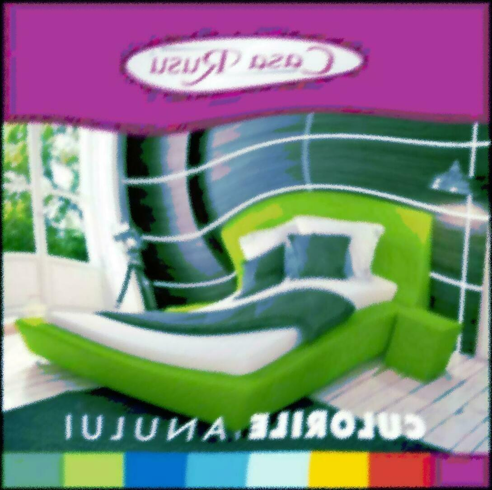
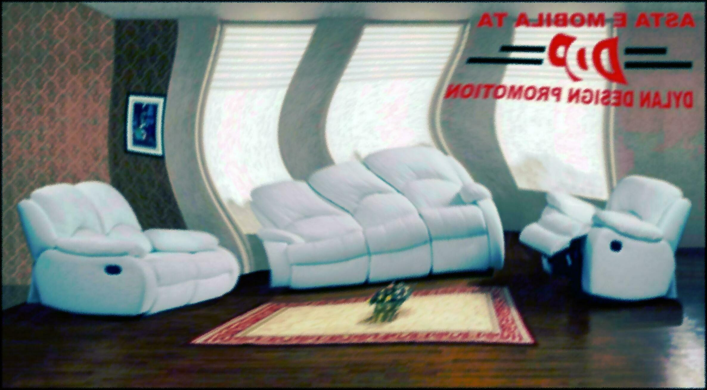

Paturi Dormitor - Tapitate & Simple - Vezi Oferta - Elvila.ro
 0372.131.820 Contact Blog Cariere Informații investitori 0 0 RON Coșul este gol! Meniu Mobilier Mobila living Biblioteci Comode TV Masute Etajere Vitrine Bufete Polite Oglinzi living Seturi living Mobila dining Mese Scaune Mobila dormitor Paturi Dulapuri Comode Noptiere Oglinzi dormitor Seturi dormitoare Mobila bucatarie Camere copii Coltare de bucatarie Mobila hol Cuiere Pantofare Canapele Canapele extensibile Set canapele stofa si piele ecologica Canapele fixe Coltare Fotolii Taburete Saltele Saltele Relaxa cu arcuri Saltele din spuma cu memorie Toppere Mobilier Birou Ansambluri office Birouri office Dulapuri si etajere Birouri calculator copii Scaune de birou Mobila la comanda Decoratiuni Perne decorative Accesorii Promoţii Mobilier Mobila living Biblioteci Comode TV Masute Etajere Vitrine Bufete Polite Oglinzi living Seturi living Mobila dining Mese Scaune Mobila dormitor Paturi Dulapuri Comode Noptiere Oglinzi dormitor Seturi dormitoare Mobila bucatarie Camere copii Coltare de bucatarie Mobila hol Cuiere Pantofare Decoratiuni Perne decorative Accesorii Canapele Canapele extensibile Set canapele stofa si piele ecologica Canapele fixe Coltare Fotolii Taburete Saltele Saltele Relaxa cu arcuri Saltele din spuma cu memorie Toppere Mobilier Birou Ansambluri office Birouri office Dulapuri si etajere Birouri calculator copii Scaune de birou Mobila la comanda Promoţii Noutati Magazin mobila Mobilier Mobila dormitor Paturi Categorii Promotie Mobilier + - Mobila living + - Biblioteci Comode TV Masute Etajere Vitrine Bufete Polite Oglinzi living Seturi living Mobila dining + - Mese Scaune Mobila dormitor + - Paturi Dulapuri Comode Noptiere Oglinzi dormitor Seturi dormitoare Mobila bucatarie Camere copii Coltare de bucatarie Mobila hol + - Cuiere Pantofare Canapele + - Canapele extensibile Set canapele stofa si piele ecologica Canapele fixe Coltare Fotolii Taburete Mobilier Birou + - Ansambluri office Birouri office Dulapuri si etajere Birouri calculator copii Scaune de birou Saltele + - Saltele Relaxa cu arcuri Saltele din spuma cu memorie Toppere Decoratiuni + - Perne decorative Accesorii Cele mai vandute O privire rapida Corp mobil cu 4 sertare CM4S schoko ELVILA 479 RON Adaugă în Coş Adaugă in Wishlist Compară produsul O privire rapida Saltea ORTOPEDICA LUX Hermia - H 20 cm ELVILA 744 RON Adaugă în Coş Adaugă in Wishlist Compară produsul O privire rapida Birou BW 140 schoko ELVILA 316 RON Adaugă în Coş Adaugă in Wishlist Compară produsul O privire rapida Saltea CONFORT Hermia - H 22 cm ELVILA 586 RON Adaugă în Coş Adaugă in Wishlist Compară produsul OFERTA SPECIALA
Vizitează-ne !
Descoperă ofertele noastre în cel mai apropiat magazin !
Află mai multe
Afla primul care sunt noutatile
Paturi Dormitor - Tapitate & Simple
Ce poate fi mai placut dupa o zi obositoare decat relaxarea intr-un pat dormitor confortabil, intr-un un pat tapitat, clasic sau rotund, care sa va asigure conditii odihnitoate si buna dispozitie pentru intreaga zi?
Pentru un somn cu adevarat odihnitor este important ca patul din dormitor si salteaua sa fie atent alese, astfel incat sa asigure o buna sustinere a corpului, indiferent ca vorbim de paturi tapitate, paturi cu lada, paturi pentru o persoana sau matrimoniale.
In magazinul nostru online gasiti orice tip de pat dormitor, cu saltea sau paturi tapitate , pentru o persoana sau matrimonial cu dimensiuni de la 140x200cm pana la 180x200cm, la preturi exceptionale.
In cautarea unui pat pentru dormitor? Iata cateva sfaturi pentru o alegere inspirata
Masura energiei pe care suntem capabili sa ne folosim de-a lungul unei zile depinde in mare masura de calitatea somnului din noaptea anterioara, astfel ca pentru fiecare dintre noi este important sa ne putem bucura pe de-a intregul de avantajele unui pat dormitor cat mai confortabil si sanatos.
Cum sa il alegeti pe cel mai potrivit dintr-o multime de optiuni este simplu, daca veti urma recomandarile de mai jos.
De cat spatiu dispuneti pentru un pat in dormitor?
Inainte de a investi intr-un pat pentru dormitor este esential sa cercetati in prealabil cateva aspecte, care va vor ajuta sa luati o decizie corecta. Pentru inceput, trebuie sa considerati spatiul de care dispuneti pentru un pat. Cate persoane il vor folosi? Aveti un cadru mai vechi, pe care doriti sa il inlocuiti?
Masurati dimensiunea acestuia pentru a avea o referinta utila la selectarea patului nou. In cazul in care nu aveti un alt cadru. Puteti folosi banda adeziva pentru a marca dimensiunile paturilor pe care le examinati din fata ecranului, ca sa vedeti cat loc ocupa in dormitor.
In situatia in care incaperea este complet goala, important este sa nu pierdeti din vedere si celelalte piese de mobilier, pentru a nu risca sa incarcati in mod excesiv camera.
Inaltimea cadrului conteaza
Un alt aspect de luat in vedere este inaltimea patului. Folositi banda adeziva pentru a observa inaltimea la care se ridica modelul de pat dormitor dorit. Acest aspect conteaza, fiindca inaltimea la care poate ajunge un pat poate varia considerabil, influentand aspectul general al camerei in care se afla. Spre exemplu, un cadru inalt confera un aspect de grandoare, facand vizibil mai mult din suprafata podelei. In schimb, un pat cu cadru jos denota o atmosfera mai linistita, minimalista, apropiata de stilul decorativ oriental.
Inainte de a merge mai departe si de a alege, este indicat sa luati in considerare felul in care veti folosi patul cand nu dormiti, ca atunci cand veti vrea sa cititi ori sa urmariti programele tv: lumina lampii va ajunge sa lumineze corespunzator? Cum veti fi pozitionat fata de televizor?
Alegeti stilul care vi se potriveste
Odata ce v-ati decis asupra inaltimii patului, va puteti distra alegand stilul patului. Veti gasi in magazinul Elvila numeroase modele atragatoare, din care sa alegeti. Seria de paturi tapitate se bucura de popularite dintotdeauna, insa si cele simple sau matlasate au foarte mare cautare.
Intrebarea pe care puteti sa v-o adresati in acest punct este urmatoarea: doriti un pat dormitor confortabil sub forma unui pat tapitat sau din material textil? Pentru cei care indragesc pielea, la Elvila puteti alege paturi superbe din piele ecologica.
In ceea ce priveste preferintele de design si stil, gusturile utilizatorilor sunt suverane. Nu este nevoie decat sa pastrati in vedere stilul celorlalte piese din incapere.
Spatii de depozitare
Desi scopul principal al unui pat dormitor este sa ne asigure un somn bun, insa in prezent paturile sunt fabricate si cu spatii de depozitare ascunse sub saltea. In functie de prioritatile dvs, acestea pot fi foarte importante, fiindca pot stoca mai multe obiecte si lucruri care ocupa spatiu pretios in camere, in special in cele de dimensiuni mai mici. Sertarele pentru depozitare sunt ideale pentru a pastra in siguranta haine si incaltaminte, dar si jucariile copiilor sau cartile care nu mai incap in biblioteca.
Alegeti o saltea
Un pat dormitor nou trebuie sa vina si cu o saltea noua: de altfel, saltele pentru pat ar trebui schimbate odata la opt ani. Fie ca ati ales un pat tapitat, unul simplu sau cu piele ecologica, in oferta Elvila veti descoperi saltele pentru orice tip de model. Alegeti saltele cu memorie sau matlasate si prindeti un loc la nivelul urmator de calitate a vietii!
Produse pe pagină: 25 30 50 75 100 Sortare după: Implicit Nume (A - Z) Nume (Z - A) Preţ (Mic Mare) Preţ (Mare Mic) Model (A - Z) Model (Z - A) Comparare Produse (0) -10% NOU O privire rapida Pat 160 TIFFY 10 cu somiera woodline crem PAT 160 TIFFY 10, cu somiera woodline cremDimensiuni de gabarit: L 171 x A 209.5 x H 171 cm. Dimensiunea suprafetei de dormit: 160 x 200 cm. Ansamblul de mobilier modular modern TIFFY Pat 160 cu somieră fără saltea este realizat din PAL melaminat. Gr.. 1533 RON 1380 RONFără TVA: 1159.66 RON Adaugă în Coş Adaugă in Wishlist Compară produsul -10% NOU O privire rapida Pat 160X200 INFINITY I-19 ALB PAT 160X200 INFINITY I-19 ALBDimensiuni de gabarit: L 210 x A 170 x H 100 cm. Dimensiunea suprafetei de dormit: 160 x 200 cm. Descriere: Patul este realizat din PAL melaminat/canturi ABS, grosimea materialului: 48 mm si 16 mm, s.. 2161 RON 1945 RON
Fără TVA: 1634.45 RON Adaugă în Coş Adaugă in Wishlist Compară produsul -10% NOU O privire rapida Pat dublu AUSTIN PAT DUBLU AUSTIN Dimensiuni de gabarit: L 206,8 x A 99,6 x H 93,5 cm Descriere: produsul este realizat din lemn masiv/MDF. Dimensiunile suprafetei de dormit (lxA): 90 x 200cm. Patul se livreaza cu somieră lamelară, inălţimea.. 2433 RON 2190 RON
Fără TVA: 1840.34 RON Adaugă în Coş Adaugă in Wishlist Compară produsul -10% NOU O privire rapida Pat OREA 160 x 200 cm Detalii ale produsului din imagine : PAT OREA 160 x 200 cm Dimensiuni de gabarit: L 216,5 x A 165 x H 122.2 cm. Potrivit pentru saltea cu dimensiunile: 200 x 160 cm. Inaltimea la nivelul saltelei: 35.5 cm.Pat modern, de lux, cu tablie inalt.. 3217 RON 2895 RON
Fără TVA: 2432.77 RON Adaugă în Coş Adaugă in Wishlist Compară produsul O privire rapida Pat KIM 160 x 200 cm schoko ELVILA Detalii ale produsului din imagine: Pat Kim 160 x 200 cmPat dublu cu suport pentru saltea: L 165,2 x A 204,2 x H 70 cm, potrivit pentru saltea cu dimensiunile 160 x 200 cm.Produsul este realizat din PAL melaminat de 18mm si PFL 3.2mm, aracet, demonta.. 523 RON
Fără TVA: 439.5 RON Adaugă în Coş Adaugă in Wishlist Compară produsul NOU O privire rapida Pat VENEZIA bej 160 x 200 cm cu lada depozitare ELVILA Pat VENEZIA cu lada pentru depozitare 160 x 200 cm Dimensiuni gabarit: L 214 x A 172 x H 110 cm. Potrivit pentru saltea cu dimensiunile L 200 x A 160 cm.Patul este executat in constructie semidemontabila si este prevazut cu lada pentru depozita.. 2167 RON
Fără TVA: 1821.01 RON Adaugă în Coş Adaugă in Wishlist Compară produsul NOU O privire rapida Pat CHIARA alb 180 fara lada pentru depozitare ELVILA Ultima bucata!Pat CHIARA tapitat cu somiera 180 x 200 cm inclusa. Patul nu este prevazut cu lada pentru depozitare.Dimensiuni gabarit: L 212 x A 192 x H 105 cm. Potrivit pentru saltea cu dimensiunile L 200 x A 180 cm.Patul este executat in cons.. 2049 RON
Fără TVA: 1721.85 RON Adaugă în Coş Adaugă in Wishlist Compară produsul NOU O privire rapida Pat CHESTER alb cu somiera 160 x 200 cm ELVILA Pat CHESTER cu somiera potrivit pentru saltea 160 x 200 cm Dimensiuni gabarit: L 228 x A 172 x H 113 cm. Potrivit pentru saltea cu dimensiunile L 200 x A 160 cm.Patul este executat in constructie semidemontabila fiind prevazut cu somiera,.. 1834 RON
Fără TVA: 1541.18 RON Adaugă în Coş Adaugă in Wishlist Compară produsul -10% NOU O privire rapida Pat cu 2 noptiere EF - 20 sonoma ELVILA Detalii ale produsului din imagine: Pat cu 2 noptiere EF - 20 sonomaDimensiuni de gabarit:Pat dublu cu suport de saltea si 2 noptiere: L 165 x A 205 x H 102 cm, pentru saltea cu dimensiunile 160x200 cm.Produsele sunt realizate din PAL melaminat de 18.. 1600 RON 1440 RON
Fără TVA: 1210.08 RON Adaugă în Coş Adaugă in Wishlist Compară produsul -20% O privire rapida Pat CAMELIA 160 cu 2 noptiere P43 ELVILA Detalii ale produsului din imagine: Pat Camelia 160 cu doua noptiere P43Dimensiuni de gabarit:Pat 1600 dublu: L 173 x A 220 x H 83/68 cm, pentru saltea cu dimensiunile: 160 x 200 cm.2 noptiere: L 49 x A 40 x H 56 cm /bucata.Produsul este realizat din.. 3013 RON 2410 RON
Fără TVA: 2025.21 RON Adaugă în Coş Adaugă in Wishlist Compară produsul O privire rapida Pat KAREN cu 2 noptiere alb ELVILA * Produsul este disponibil in stoc si se aduce in 30 zile la magazinul Elvila.Detalii ale produsului din imagine: Pat cu 2 noptiere KARENDimensiuni de gabarit:Pat 1600 dublu fara somiera: L 223 x A 170.5 x H 70.5 cm, pentru saltea cu dimensiunile: 16.. 2450 RON
Fără TVA: 2058.82 RON Adaugă în Coş Adaugă in Wishlist Compară produsul NOU O privire rapida Pat simplu 90 x 200 cm tablie curba schoko ELVILA Detalii ale produsului din imagine: Pat simplu tablie curba sonomaDimensiuni de gabarit: L 90 x A 200 x H 54/70 cm.Produsul este realizat in constructie demontabila, din PAL melaminat de 18mm, PAL 12mm cu folie de culoare alba.Atentie:* Patul este pr.. 370 RON
Fără TVA: 310.92 RON Adaugă în Coş Adaugă in Wishlist Compară produsul -20% O privire rapida Pat dublu tablie curba 140 x 200 cm sonoma ELVILA Detalii ale produsului din imagine: Pat dublu tablie curba sonomaDimensiuni de gabarit: L 140 x A 200 x H 54/70 cm.Produsul este realizat in constructie demontabila, din PAL melaminat de 18mm, PAL 12mm cu folie de culoare alba.Atentie:* Patul este pr.. 572 RON 458 RON
Fără TVA: 384.87 RON Adaugă în Coş Adaugă in Wishlist Compară produsul -10% O privire rapida Pat KIM 140 x 200 cm fag ELVILA * Produsul este disponibil la pretul promotional de 441 lei. * Stocul este limitat!Detalii ale produsului din imagine: Pat Kim 140 x 200 cmDimensiuni de gabarit: L 145,2 x A 204,2 x H 70 cm, potrivit pentru saltea cu dimensiunile: 140 x 200.. 490 RON 441 RON
Fără TVA: 370.59 RON Adaugă în Coş Adaugă in Wishlist Compară produsul -10% NOU O privire rapida Pat TARA 90 x 200 cm nuc aida cu alb ELVILA * Produsul este disponibil la pretul promotional de 467 lei. * Stocul este limitat!Detalii ale produsului din imagine: Pat TARA 90 x 200 cm nuc aida cu albDimensiuni de gabarit: L 104 x A 208 x H 86 cm; potrivit pentru saltea cu dimensiunea: 90 .. 519 RON 467 RON
Fără TVA: 392.44 RON Adaugă în Coş Adaugă in Wishlist Compară produsul -20% NOU O privire rapida Pat dublu 140 x 200 cm tablie curba alb ELVILA * Produsul este disponibil in stoc si se aduce in 30 zile la magazinul Elvila.Detalii ale produsului din imagine: Pat dublu tablie curba albDimensiuni de gabarit: L 140 x A 200 x H 54/70 cm.Produsul este realizat in constructie demontabila, din.. 572 RON 458 RON
Fără TVA: 384.87 RON Adaugă în Coş Adaugă in Wishlist Compară produsul -10% NOU O privire rapida Pat ALINA sonoma 160 x 200 cm ELVILA * Produsul este disponibil la pretul promotional de 273 lei. * Stocul este limitat!Detalii ale produsului din imagine: Pat ALINA sonoma 160 x 200 cmDimensiuni de gabarit: L 164 x A 203.5 x H 80/35 cm potrivit pentru saltea cu dimensiunile:.. 303 RON 273 RON
Fără TVA: 229.41 RON Adaugă în Coş Adaugă in Wishlist Compară produsul NOU O privire rapida Pat CRISTINA alb ELVILA Detalii ale produsului din imagine: Pat CRISTINA albDimensiuni de gabarit:Pat 1600 dublu: L 175 x A 213 x H 57/90 cm, pentru saltea cu dimeniunile de 160 x 200 cm, pret 1252lei;Produsul este realizat in constructie demontabila: capat mare de pat.. 1252 RON
Fără TVA: 1052.1 RON Adaugă în Coş Adaugă in Wishlist Compară produsul O privire rapida Pat ALINA 140 x 200 cm sonoma ELVILA * Produsul este disponibil in stoc si se aduce in 30 zile la magazinul Elvila.Detalii ale produsului din imagine: Pat ALINA sonoma 140 x 200 cmDimensiuni de gabarit: L 144 x A 203.5 x H 80/35 cm potrivit pentru saltea cu dimensiunile: 140x200 cm.Prod.. 307 RON
Fără TVA: 257.98 RON Adaugă în Coş Adaugă in Wishlist Compară produsul -10% O privire rapida Pat ALINA 160 x 200 cm schoko ELVILA * Produsul pe finisaj schoko+par este disponibil la pretul promotional de 317 lei. * Stocul este limitat!Detalii ale produsului din imagine: Pat 160 ALINA schokoDimensiuni de gabarit: L 164 x A 203.5 x H 80/35 cm potrivit pentru saltea cu dimens.. 352 RON 317 RON
Fără TVA: 266.39 RON Adaugă în Coş Adaugă in Wishlist Compară produsul -10% O privire rapida Pat SORANA 160 x 200 cm schoko ELVILA * Produsul este disponibil in stoc si se aduce in 30 zile la magazinul Elvila.Detalii ale produsului din imagine: Pat SORANA 160 schokoDimensiuni de gabarit: L 168.2 x A 207.7 x H 89.3 cm potrivit pentru saltea cu dimensiunile: 160x200 cm.Produsul es.. 527 RON 474 RON
Fără TVA: 398.32 RON Adaugă în Coş Adaugă in Wishlist Compară produsul O privire rapida Pat BETTY 1 persoana 90 x 200 cm ELVILA * Pentru disponibilitatea in stoc a produsului comandat si pentru culoarea materialului de acoperire va rugam sa contactati magazinul Elvila cel mai apropiat de locatia dumneavoastra.Detalii ale produsului din imagine: Pat BETTY simpluPatul Bet.. 1218 RON
Fără TVA: 1023.53 RON Adaugă în Coş Adaugă in Wishlist Compară produsul O privire rapida Pat BEKY matlasat piele ecologica 160 x 200 cm ELVILA * Pentru disponibilitatea in stoc a produsului comandat si pentru culoarea materialului de acoperire va rugam sa contactati magazinul Elvila cel mai apropiat de locatia dumneavoastra.Detalii ale produsului din imagine: Pat Beky matlasat piele ecologi.. 1946 RON
Fără TVA: 1635.29 RON Adaugă în Coş Adaugă in Wishlist Compară produsul NOU O privire rapida Pat tapitat dublu 160 x 200 cm * Pentru disponibilitatea in stoc a produsului comandat si pentru culoarea materialului de acoperire va rugam sa contactati magazinul Elvila cel mai apropiat de locatia dumneavoastra.Detalii ale produsului din imagine: Pat tapitat 160 cu lada pentru .. 2384 RON
Fără TVA: 2003.36 RON Adaugă în Coş Adaugă in Wishlist Compară produsul O privire rapida Pat BETTY 1 persoana 90x200 cm stofa 3 ELVILA * Produsul este disponibil in stoc si se aduce in 30 zile la magazinul Elvila.Detalii ale produsului din imagine: Pat BETTY simplu 90x200 cmDimensiunile de gabarit: L 210 x A 90 x H 79 cm. Suprafata utila de dormit: L 200 X A 90 cm.Pat tapitat pentru.. 1316 RON
Fără TVA: 1105.88 RON Adaugă în Coş Adaugă in Wishlist Compară produsul NOU O privire rapida Pat FLORENTA 160 x 200 cm cu 2 noptiere ELVILA * Produsul este disponibil in stoc si se aduce in 30 zile la magazinul Elvila.Detalii ale produsului din imagine: Pat Florenta 160 cu 2 noptiereDimensiuni de gabarit:Pat 1600 fara somiera: L 166 x A 209,5 x H 106 cm, pentru saltea cu dimensiunile: 16.. 4222 RON
Fără TVA: 3547.9 RON Adaugă în Coş Adaugă in Wishlist Compară produsul NOU O privire rapida Pat TUDOR 160 x 200 cm cu 2 noptiere mahon ELVILA Detalii ale produsului din imagine: Pat cu 2 noptiere TUDOR mahonSetul pentru dormitor este compus din: pat 160 cm si noptiere (2 bucati),Dimensiuni de gabarit:Pat 1600: L 209 x A 168,5 x H 100 cm potrivit pentru saltea cu dimensiunile 160x200 .. 3162 RON
Fără TVA: 2657.14 RON Adaugă în Coş Adaugă in Wishlist Compară produsul O privire rapida Pat BETTY mediu 140 x 200 cm stofa 3 ELVILA * Pentru disponibilitatea in stoc a produsului comandat si pentru culoarea materialului de acoperire va rugam sa contactati magazinul Elvila cel mai apropiat de locatia dumneavoastra.Detalii ale produsului din imagine: Pat BETTY mediu 140 x 200 cmDim.. 1785 RON
Fără TVA: 1500 RON Adaugă în Coş Adaugă in Wishlist Compară produsul O privire rapida Pat BETTY 1 persoana 90*200 cm stofa 2 ELVILA * Produsul este disponibil in stoc si se aduce in 30 zile la magazinul Elvila.Detalii ale produsului din imagine:Pat BETTY simplu 90*200 cmDimensiunile de gabarit: L 210 x A 90 x H 79 cm. Suprafata utila de dormit: L 200 X A 90 cm.Pat tapitat pentru .. 1282 RON
Fără TVA: 1077.31 RON Adaugă în Coş Adaugă in Wishlist Compară produsul O privire rapida Pat BEKY matlasat 160 x 200 cm stofa 3 ELVILA * Pentru disponibilitatea in stoc a produsului comandat si pentru culoarea materialului de acoperire va rugam sa contactati magazinul Elvila cel mai apropiat de locatia dumneavoastra.Detalii ale produsului din imagine: Pat BEKY MatlasatDimensiuni de .. 1946 RON
Fără TVA: 1635.29 RON Adaugă în Coş Adaugă in Wishlist Compară produsul Afişare 1 - 30 din 52 (2 pagini) 1 2 | Facebook Rămâi conectat Cele mai recente articole
Noutăţile începutului de octombrie la Elvila
Noi modele de bucătării deosebite în portofoliul Elvila
Indispensabile pentru începerea școlii: piese de mobilier și accesorii recomandate de ELVILA
Noutățile începutului de toamnă la Elvila
Cele mai populare produse ELVILA din 2020
Piese de efect pentru amenajarea noii tale locuințe
Idei inspirate pentru amenajarea camerei copilului
Noutățile verii 2020 la Elvila
Inspirație marca Elvila pentru amenajarea locuinței în stil maritim
Mobilierul tău preferat, la reducere! Cât e vara de lungă!
Cum să-ți mobilezi cu mult bun-gust locuința, fără să cheltuiești prea mult
Propuneri locative marca Elvila pentru desfășurarea optimă a lucrului de acasă
Cadouri inspirate pentru femeile speciale din viața ta - propuneri marca Elvila
Primăvară plină de noutăți în portofoliul Elvila
Reduceri masive de început de primăvară la tot portofoliul de produse Elvila
Ospețe memorabile doar în jurul seturilor de dining marca Elvila
Maserati-o stofă specială din colecţia Elvila
Noutăţi de iarnă în portofoliul de produse Elvila
Continuă aventura promoțiilor de -50% alături de ELVILA! AU MAI RĂMAS 12 ZILE!
Plin sezon al campaniei de reduceri de 50% marca Elvila
Aventura promoţiilor continuă - secţiunea fotolii tapiţate
Elvila dă startul unei campanii hibernale de reduceri semnificative, la o multitudine de produse
Piese de mobilier din lemn masiv - o alegere inspirată pentru interioare dominate de calitate
Surse de inspiraţie pentru amenajarea unei locuinţe magice -propuneri marca Elvila
Sezonul cadourilor – piese de mobilier marca Elvila pe care să le oferi în dar
Festivalul preţurilor mici continuă la Elvila
Depozitarea în locuință - propuneri marca Elvila
Elvila sărbătoreşte cea mai neagră lună din an cu o mulţime de reduceri
Canapelele din piele naturală-sinonimul rafinamentului desăvârşit din spaţiile de relaxare
Măsuţa de cafea sau îmbinarea utilului cu esteticul în living
Fotoliul – produs iconic din portofoliul Elvila
Patul – cum să-l alegi pe cel mai potrivit pentru tine
Dressing-uri apreciate din portofoliul Elvila pentru dormitor şi hol
Colţare extensibile apreciate din colectia Elvila, cu şezut pe arcuri
Cuiere de calitate pentru holuri amenajate cu stil
Colţare viu-colorate pentru mai multă bună dispoziţie în bucătărie
Dormitoare în stil modern pentru interioare pline de stil
Canapele cu extensii de dormit noapte de noapte
Saltelele Relaxa Original – produse-emblemă din portofoliul Elvila ale unui brand cu tradiţie
Mese şi scaune pentru living-uri cu personalitate
Canapele în culori vesele pentru un living atrăgător tot timpul anului
Modele deosebite de dormitoare cu dressing-uri, cu care să-ţi impresionezi oaspeţii
Piese de mobilier ideale pentru amenajarea locuinţei în stil modern
Piese de mobilier marca ELVILA pentru un living primitor
Colţare de bucătărie marca Elvila pentru stiluri variate de amenajare
Recomandări de canapele cu extensii deosebite marca ELVILA
Camere de tineret în colecţia Elvila
Produse în stil clasic în colecţia ELVILA
Piese de mobilier de la Elvila în culoarea anului 2019 - CORAL
Invaţă cum să alegi un dulap potrivit pentru dormitorul tău
Biblioteca, accesoriul indispensabil din living
Idei de amenajare a locuintei in culori de primavara
Serviciu nou de amenajare de la Elvila - mobilierul la comandă
Cum creezi impresia unei locuințe mai luminoase și spațioase cu ajutorul oglinzilor
Cele mai bune trucuri pentru a curăța mobila din lemn, PAL sau MDF
Idei pentru decorarea și amenajarea casei în funcție de sezon
Crăciunița: sfaturi de îngrijire pentru a avea o plantă frumoasă și sănătoasă
Cum poți folosi culorile puternice pentru a-ți amenaja locuința
Amenajarea locuinței în stil clasic: recomandări și idei ca să creezi un spațiu elegant și funcțional
Stilul provensal: idei și recomandări de amenajare pentru o casă ca în sudul Franței
Cum să amenajezi un dining stilat în orice locuință
De ce trebuie sa tii cont cand alegi perdelele: incapere, material si culoare
Canapea sau coltar? 6 reguli care te ajuta sa-ti optimizezi spatiul din living
Cum poti sa amenajezi livingul in nuante albastre - ghid cu sfaturi practice si idei care sa te inspire
Amenajari interioare in stil industrial: simplitate si functionalitate pentru orice incapere
Amenajarea camerei de oaspeti. Idei pentru a o face practica si placuta
Amenajarea locuintei in stil scandinav: simplitate, confort si functionalitate
Amenajarea minimalista. Principiile acestui stil de design si inspiratie pentru casa ta
Amenajare feng-shui. Cum sa inviti norocul si energia pozitiva in casa ta
30 de idei inspirationale de cadouri de casa noua pe care oricine si le-ar dori
Stilul shabby chic in locuinta: accente romantice si culori feminine
Trucuri pentru curatarea canapelei si a mobilierului tapitat
Totul despre intretinerea si reconditionarea parchetului. Sfaturi si solutii practice
Idei pentru crearea unui perete accent. Modele care sa te inspire in reamenajarea casei
Decor in nonculori: cum sa folosesti combinatia alb-negru in amenajarile interioare
Top 15 cele mai usor de cultivat si ingrijit plante aromatice
Remedii infailibile pentru inlaturarea mirosurilor neplacute din locuinta
Alegerea covorului potrivit pentru fiecare camera - Modele, materiale si nivelul de rezistenta
GHID PRACTIC. Cum amenajezi casa de vacanta. Stiluri de design potrivite
5 recomandari ale designerilor de interior pentru anul 2018
GHID PRACTIC. Trucuri pentru reconditionarea si restaurarea pieselor vechi de mobilier
Cum si unde poate fi amenajat un dressing. Peste 11 idei care sa te inspire
Cum amenajam casa in spiritul Sarbatorilor de iarna
10 plante care rezista fara multa lumina. Pot infrumuseta si cele mai intunecate camere
Plante rezistente la umezeala, pe care le poti pastra in baie
Cum alegi corpurile de iluminat in functie de camera
GALERIE FOTO: 50+ SOLUTII DE DEPOZITARE SI ORGANIZAREA EFICIENTA A SPATIULUI
Regulile de aur in amenajarea garsonierei
CUM POTI SA CURETI SALTEAUA CU SOLUTII PREPARATE IN CASA
Cum sa alegi corect scaunul de birou. Criterii de care sa tii cont
Pereti veseli - culori/stickere/picturi pe pereti
Idei ingenioase pentru amenajarea unui hol prietenos
Amenajarea baii – idei si inspiratie
Cum sa ai un dormitor organizat
Tapetul – idei si sfaturi. Cum il folosesti in amenajarea casei
Amenajarea camerei copilului
Amenajarea mansardei - idei de utilizare a spatiului
Cum asortezi mobila wenge. Trucuri pentru a te bucura cu adevarat de frumusetea ei clasica
Idei practice pentru amenajarea balconului. Cum sa-ti creezi propriul colt de rai in apartament
5 tipuri de mobilier care te ajuta sa economisesti mult spatiu intr-un apartament mic
3 moduri prin care iti poti uimi musafirii atunci cand mobila este alba
Amenajarea unui dormitor mic de bloc: Idei | Galerie
Amenajarea Bucatariei: Idei si sfaturi pentru o bucatarie moderna
Amenajarea holului de la intrare: Solutii si inspiratie pentru un decor deosebit
Amenajarea livingului: Idei si sfaturi - simplu sau cu bucatarie open space
De ce mobilierul este cel mai important atunci cand (re)decorezi locuinta?
Mobila din PAL sau din lemn masiv? Care sunt avantajele si dezavantajele fiecarei variante
5 metode simple și ieftine pentru a personaliza o locuință nouă
Ghidul decorării casei pentru începători. Sfaturi esențiale de la profesioniști, pentru un decor de revistă
5 trenduri superbe pentru amenajarea dormitorului, pe care designerii le vor adopta in 2017
5 trucuri cunoscute doar de designeri pentru amenajarea unui living confortabil si relaxant
5 trucuri vizuale pentru a crea un design spectaculos în casa ta. Detaliile fac diferența
5 mituri pe care le-ai crezut adevarate pana acum despre amenajarea locuintei
6 sfaturi utile pentru ca renovarea bucatariei sa fie un succes garantat
10 semne ca bucataria ta are nevoie de o renovare completa
5 trucuri de amenajare. Cum faci ca locuinta ta sa para mai spatioasa
4 trucuri de organizare a spațiului de lucru care cresc productivitatea la locul de muncă
Cum ingrijesti corect mobila. Tot ce trebuie sa stii despre curatarea si intretinerea ei
Cum iti afecteaza mobila starea de spirit si ce stiu designerii de succes
5 trucuri pentru ingrijirea canapelei. Va rezista ani la rand si va arata ca noua
Tot ce ai vrea sa stii despre saltelele Relaxa, produse in Romania inca din anii ‘70
Ghid practic. Cum sa alegi canapeaua cea mai buna pentru tine
8 sfaturi utile. Cum alegi mobila potrivita pentru un apartament de mici dimensiuni
5 sfaturi pretioase pentru a alege mobila de bucatarie perfecta
Scurt ghid practic. Cum alegi culoarea canapelei pentru livingul tau
Cum stii daca ai ales salteaua de pat potrivita
Ghidul achiziționării canapelei extensibile perfecte
4 piese de mobilier care iti fac viata mai usoara si cum sa le alegi pe cele mai bune
Cum poti sa creezi iluzia unui dormitor nou? 5 idei practice si ieftine
4 dormitoare in care ti-ai dori sa-ti petreci toate noptile
COLABORATORI
Compania Elvila detine un numar de 26 de magazine la nivel national, din care 10 magazine proprii in: Alexandria, Bacau, Botosani, Brad, Bucuresti, Constanta, Focsani, Iasi, Mizil, Ploiesti si 16 magazine in sistem de franciza si distribuitori. Mai multe detalii gasiti aici . Informaţii Despre noi Evenimente Franciză Broșuri Cariere Politica de confidențialitate Politica cookies Blog Contact Harta sitului A.N.P.C. Utile Cum cumpăr? Modalităţi de plată Credit în magazin Livrare şi montaj Garanţie Întrebări frecvente Termeni și condiții Contul meu Contul meu Istoric comenzi Returnări Wish List Newsletter Site promovat de Agentia Fortin Elvila - Mobilă cât vezi cu ochii © 2019
